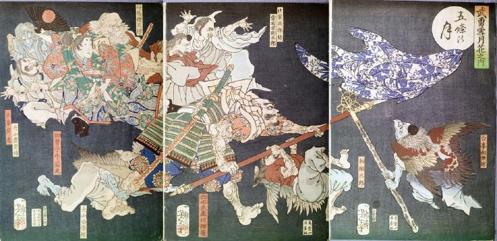

満月が照らす中で、武蔵坊弁慶と戦う天狗たち。牛若丸は鞍馬僧正坊たちと、座ってその様子を眺めている。
著作者：一魁齋芳年（月岡芳年）／出典：親書誌：U426_nichibunken_0138：五條の月；ゴジョウノツキ／日付：2009／資源識別子：U426_nichibunken_0138_0001_0000
Copyright (c)2010- International Research Center for Japanese Studies, Kyoto, Japan. All rights reserved.